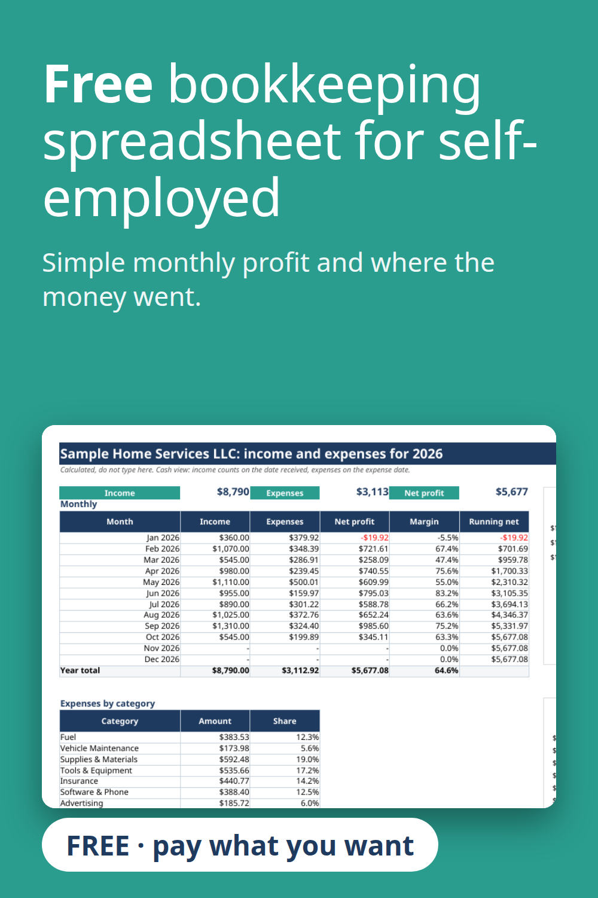

A simple free bookkeeping spreadsheet for the self-employed and freelancers. Record income and expenses, then check monthly profit, profit margin and spending by category on one summary page. A sample file and a blank copy are included. Works in Excel and Google Sheets. Pay what you want, even $0.
Get the free tracker on Gumroad
Built with the help of AI tools, then tested: every report number was recalculated separately.